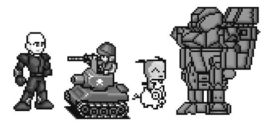
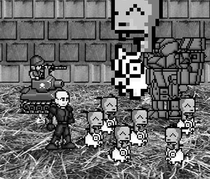

|
|
Chapter 19 |
Sonidos e Imágenes |

Temas Tratados en Este Capítulo:
· Archivos de Sonido e Imagen
· Dibujando Sprites
· La Función pygame.image.load()
· El Tipo de Datos pygame.mixer.Sound
· El Módulo pygame.mixer.music
En los últimos dos capítulos, hemos aprendido cómo hacer programas GUI que muestran gráficos y pueden aceptar entradas del teclado y del ratón. También hemos aprendido cómo dibujar diferentes formas. En este capítulo aprenderemos cómo mostrar fotos e imágenes (llamadas sprites) y reproducir sonidos y música en nuestros juegos.
Sprite es el nombre dado a una imagen individual bidimensional que se usa como parte de los gráficos en la pantalla. La Figura 19-1 muestra algunos ejemplos de sprites.

Figura 19-1: Algunos ejemplos de sprites.
La Figura 19-2 muestra sprites utilizados en una escena completa.

Figura 19-2: Un ejemplo de una escena completa, con sprites dibujados sobre una imagen de fondo.
Los sprites se dibujan sobre una imagen de fondo. Nota que puedes invertir el sprite horizontalmente o verticalmente de modo que las imágenes se den vuelta. Puedes dibujar el mismo sprite múltiples veces en la misma ventana. También puedes redimensionar los sprites para que sean más grandes o más pequeños que la imagen original. Podemos considerar a la imagen de fondo como un gran sprite.
El siguiente programa demostrará cómo reproducir sonidos y dibujar sprites usando Pygame.
Archivos de Sonido e Imagen
Los sprites son almacenados en archivos de imagen en tu computadora. Pygame puede usar varios formatos diferentes de imagen. Puedes darte cuenta cuál es el formato de un archivo mirando al final del nombre de archivo (después del último punto). Esto se denomina la extensión del archivo. Por ejemplo, el archivo jugador.png tiene formato PNG. Los formatos de imagen soportados por Pygame incluyen BMP, PNG, JPG, y GIF.
Puedes descargar imágenes de tu navegador. En la mayoría de los navegadores, tienes que hacer clic con el botón derecho sobre una imagen en una página web y seleccionar Guardar del menú que aparece. Recuerda en qué lugar de tu disco guardas el archivo de imagen. Copia el archivo de la imagen descargada a la misma carpeta que el archivo .py de tu programa de Python. También puedes crear tus propias imágenes con un programa de dibujo como MS Paint o Tux Paint.
Los formatos de archivos de sonido que Pygame soporta son MID, WAV y MP3. Puedes descargar efectos de sonido de Internet igual que los archivos de imagen. Deben estar en uno de estos tres formatos. Si tu computadora tiene un micrófono, también puedes grabar sonidos y crear tus propios archivos WAV para usar en tus juegos.
Programa Sprites y Sonidos
Este programa es igual que el programa de entradas del teclado y del ratón del capítulo anterior. Sin embargo, en este programa usaremos sprites en lugar de cuadrados sin dibujos. Usaremos un sprite de una personita en lugar del cuadrado blanco del jugador, y un sprite de cerezas reemplazando a los cuadrados verdes de comida. También reproduciremos música de fondo y un efecto de sonido cuando el sprite del jugador se coma una de las cerezas.
Código Fuente del Programa Sprites y Sonidos
Si sabes cómo usar software de gráficos como Photoshop o MS Paint, puedes dibujar tus propias imágenes. Si no sabes usar estos programas, puedes descargar gráficos de sitios web y usar esos archivos de imagen. Lo mismo vale para archivos de música y sonido. También puedes usar imágenes de sitios web o de una cámara digital. Puedes descargar los archivos de imagen y sonido del sitio web de este libro en http://invpy.com/es.
Si obtienes errores luego de escribir este código, compara lo que has escrito con el código del libro usando la herramienta diff online en http://invpy.com/es/diff/spritesYsonidos.
spritesYsonidos.py
1. import pygame, sys, time, random
2. from pygame.locals import *
3.
4. # configurar pygame
5. pygame.init()
6. relojPrincipal = pygame.time.Clock()
7.
8. # configurar la ventana
9. ANCHOVENTANA = 400
10. ALTOVENTANA = 400
11. superficieVentana = pygame.display.set_mode((ANCHOVENTANA, ALTOVENTANA), 0, 32)
12. pygame.display.set_caption('Sprites y Sonido')
13.
14. # configurar los colores
15. NEGRO = (0, 0, 0)
16.
17. # configurar la estructura de bloque de datos
18. jugador = pygame.Rect(300, 100, 40, 40)
19. imagenJugador = pygame.image.load('jugador.png')
20. imagenEstiradaJugador = pygame.transform.scale(imagenJugador, (40, 40))
21. imagenComida = pygame.image.load(cereza.png')
22. comidas = []
23. for i in range(20):
24. comidas.append(pygame.Rect(random.randint(0, ANCHOVENTANA - 20), random.randint(0, ALTOVENTANA - 20), 20, 20))
25.
26. contadorComida = 0
27. NUEVACOMIDA = 40
28.
29. # configurar variables del teclado
30. moverseIzquierda = False
31. moverseDerecha = False
32. moverseArriba = False
33. moverseAbajo = False
34.
35. VELOCIDADMOVIMIENTO = 6
36.
37. # configurar música
38. sonidoRecolección = pygame.mixer.Sound('recolección.wav')
39. pygame.mixer.music.load('musicaDeFondo.mid')
40. pygame.mixer.music.play(-1, 0.0)
41. músicaSonando = True
42.
43. # ejecutar el bucle del juego
44. while True:
45. # comprobar si se ha disparado el evento QUIT (salir)
46. for evento in pygame.event.get():
47. if evento.type == QUIT:
48. pygame.quit()
49. sys.exit()
50. if evento.type == KEYDOWN:
51. # cambiar las variables del teclado
52. if evento.key == K_LEFT or evento.key == ord('a'):
53. moverseDerecha = False
54. moverseIzquierda = True
55. if evento.key == K_RIGHT or evento.key == ord('d'):
56. moverseIzquierda = False
57. moverseDerecha = True
58. if evento.key == K_UP or evento.key == ord('w'):
59. moverseAbajo = False
60. moverseArriba = True
61. if evento.key == K_DOWN or evento.key == ord('s'):
62. moverseArriba = False
63. moverseAbajo= True
64. if evento.type == KEYUP:
65. if evento.key == K_ESCAPE:
66. pygame.quit()
67. sys.exit()
68. if evento.key == K_LEFT or evento.key == ord('a'):
69. moverseIzquierda = False
70. if evento.key == K_RIGHT or evento.key == ord('d'):
71. moverseDerecha = False
72. if evento.key == K_UP or evento.key == ord('w'):
73. moverseArriba = False
74. if evento.key == K_DOWN or evento.key == ord('s'):
75. moverseAbajo = False
76. if evento.key == ord('x'):
77. jugador.top = random.randint(0, ALTOVENTANA- jugador.height)
78. jugador.left = random.randint(0, ANCHOVENTANA- jugador.width)
79. if evento.key == ord('m'):
80. if músicaSonando:
81. pygame.mixer.music.stop()
82. else:
83. pygame.mixer.music.play(-1, 0.0)
84. músicaSonando = not músicaSonando
85.
86. if evento.type == MOUSEBUTTONUP:
87. comidas.append(pygame.Rect(evento.pos[0] - 10, evento.pos[1] - 10, 20, 20))
88.
89. contadorComida += 1
90. if contadorComida >= NUEVACOMIDA:
91. # agregar nueva comida
92. contadorComida = 0
93. comidas.append(pygame.Rect(random.randint(0, ANCHOVENTANA - 20), random.randint(0, ALTOVENTANA - 20), 20, 20))
94.
95. # pintar el fondo negro sobre la superficie
96. superficieVentana.fill(NEGRO)
97.
98. # move the player
99. if moverseAbajo and jugador.bottom < ALTOVENTANA:
100. jugador.top += VELOCIDADMOVIMIENTO
101. if moverseArriba and jugador.top > 0:
102. jugador.top -= VELOCIDADMOVIMIENTO
103. if moverseIzquierda and jugador.left > 0:
104. jugador.left -= VELOCIDADMOVIMIENTO
105. if moverseDerecha and jugador.right < ANCHOVENTANA:
106. jugador.right += VELOCIDADMOVIMIENTO
107.
108.
109. # dibujar el bloque sobre la superficie
110. superficieVentana.blit(imagenEstiradaJugador, jugador)
111.
112. # comprobar si el jugador ha intersectado alguno de los cuadrados de comida
113. for comida in comidas[:]:
114. if jugador.colliderect(comida):
115. comidas.remove(comida)
116. jugador = pygame.Rect(jugador.left, jugador.top, jugador.width + 2, jugador.height + 2)
117. imagenEstiradaJugador = pygame.transform.scale(imagenJugador, (jugador.width, jugador.height))
118. if músicaSonando:
119. sonidoRecolección.play()
120.
121. # dibujar la comida
122. for comida in comidas:
123. superficieVentana.blit(imagenComida, comida)
124.
125. # dibujar la ventana sobre la pantalla
126. pygame.display.update()
127. relojPrincipal.tick(40)

Figura 19-3: Una captura de pantalla modificada del juego Sprites y Sonidos.
Configurando la Ventana y la Estructura de Datos
La mayoría del código de este programa es igual al programa Detección de Colisiones del capítulo anterior. Nos enfocaremos sólo en las partes que agregan sprites y sonido.
12. pygame.display.set_caption('Sprites y Sonido')
Primero, configuramos la leyenda de la barra de título a una cadena que describa este programa en la línea 12. Pasamos la cadena 'Sprites y Sonido' a la función pygame.display.set_caption().
17. # configurar la estructura de bloque de datos
18. jugador = pygame.Rect(300, 100, 40, 40)
19. imagenJugador = pygame.image.load('jugador.png')
20. imagenEstiradaJugador = pygame.transform.scale(imagenJugador, (40, 40))
21. imagenComida = pygame.image.load(cereza.png')
Vamos a usar tres variables diferentes para representar al jugador, a diferencia de los programas anteriores que sólo usaban una.
La variable jugador en la línea 18 almacenará un objeto rect que registra el tamaño y la posición del jugador. La variable no contiene la imagen del jugador, sólo su tamaño y posición. Al principio del programa, la esquina superior izquierda del jugador se ubica en (300, 100) y el jugador tiene una altura y un ancho de 40 píxeles para empezar.
La segunda variable de la línea 19 que representa al jugador es imagenJugador. la función pygame.image.load() recibe una cadena con el nombre de archivo de la imagen a cargar. El valor de retorno es un objeto Surface que tiene el gráfico del archivo dibujado sobre su superficie. Guardamos este objeto Surface dentro de imagenJugador.
La tercera variable se explica en la próxima sección.
La Función pygame.transform.scale()
En la línea 20, utilizamos una nueva función en el módulo pygame.transform. La función pygame.transform.scale() puede reducir o agrandar un sprite. El primer argumento es un objeto pygame.Surface con la imaten dibujada sobre él. El segundo argumento es una tupla con los nuevos ancho y altura de la imagen en el primer argumento. La función The pygame.transform.scale() devuelve un objeto pygame.Surface con la imagen dibujada en un nuevo tamaño. Almacenaremos la imagen original en la variable imagenJugador, y la imagen estirada se guardará en la variable imagenEstiradaJugador.
En la línea 21, llamamos nuevamente a pygame.image.load() para crear un objeto Surface con la imagen de una cereza dibujada sobre él. Asegúrate de tener los archivos jugador.png y cereza.png en la misma carpeta que el archivo spritesYsonido.py, pues de otro modo Pygame no podrá encontrarlos y dará un error.
Activando y Desactivando el Sonido
37. # configurar música
38. sonidoRecolección = pygame.mixer.Sound('recolección.wav')
39. pygame.mixer.music.load('musicaDeFondo.mid')
40. pygame.mixer.music.play(-1, 0.0)
41. músicaSonando = True
A continuación necesitas cargar los archivos de sonido. Hay dos módulos para sonido en Pygame. El módulo pygame.mixer puede reproducir efectos de sonido breves durante el juego. El módulo pygame.mixer.music puede reproducir música de fondo.
Llamamos a la función constructor pygame.mixer.Sound() para crear un objeto pygame.mixer.Sound (llamado objeto Sound por brevedad). Este objeto tiene un método play() que reproducirá el efecto de sonido al ser llamado.
La línea 39 llama a pygame.mixer.music.load() para cargar la música de fondo. La línea 40 llama a pygame.mixer.music.play() para comenzar a reproducir la música de fondo. El primer parámetro indica a Pygame cuántas veces repetir la música de fondo luego de la primera vez que se reproduce. Es decir que pasar 5 como argumento hará que Pygame reproduzca la música de fondo 6 veces. -1 es un valor especial, y pasarlo como el primer parámetro hace que la música de fondo se repita siempre.
El segundo parámetro de pygame.mixer.music.play() es el punto en que el archivo de sonido comienza su reproducción. Pasar 0.0 hace que la música comience desde el principio. Pasar 2.5 como segundo parámetro hace que la música de fondo comience dos segundos y medio después del principio.
Finalmente, la variable musicPlaying tendrá un valor Booleano que indica al programa si debe reproducir la música de fondo y los efectos o no. Es bueno dar al jugador la opción de poder ejecutar el programa en modo silencioso.
Activando y Desactivando el Sonido
79. if evento.key == ord('m'):
80. if músicaSonando:
81. pygame.mixer.music.stop()
82. else:
83. pygame.mixer.music.play(-1, 0.0)
84. músicaSonando = not músicaSonando
La tecla M activa y desactiva la música de fondo. Si músicaSonando tiene asignado el valor True, la música de fondo está reproduciéndose y debemos desactivar la música llamando a pygame.mixer.music.stop(). Si músicaSonando tiene asignado False, entonces la música de fondo no está sonando y debería activarse llamando a pygame.mixer.music.play().
Finalmente, sin importar el estado actual, queremos conmutar el valor de músicaSonando. Conmutar un Booleano significa asignar el opuesto a su valor. La línea músicaSonando = not músicaSonando asigna False a la variable si tiene el valor True, o le asigna True si tiene el valor False. Piensa en esta conmutación como lo que ocurre cuando accionas un interruptor de luz: mover el interruptor cambia al estado opuesto.
Dibujando al Jugador sobre la Ventana
109. # dibujar el bloque sobre la superficie
110. superficieVentana.blit(imagenEstiradaJugador, jugador)
Recuerda que el valor almacenado en imagenEstiradaJugador es un objeto Surface. La línea 110 dibuja el sprite del jugador sobre el objeto Surface de la ventana (el cual se almacena en superficieVentana).
El segundo parámetro del método blit() es un objeto Rect que especifica dónde en el objeto Surface se dibujará el sprite. El objeto Rect almacenado en jugador es el que registra la posición del jugador en la ventana.
Comprobando si el Jugador Ha Colisionado con Cerezas
114. if jugador.colliderect(comida):
115. comidas.remove(comida)
116. jugador = pygame.Rect(jugador.left, jugador.top, jugador.width + 2, jugador.height + 2)
117. imagenEstiradaJugador = pygame.transform.scale(imagenJugador, (jugador.width, jugador.height))
118. if músicaSonando:
119. sonidoRecolección.play()
Este código es similar al de programas anteriores, pero hay un par de líneas nuevas. Llamamos al método play() sobre el objeto Sonido almacenado en la variable sonidoRecolección. Pero sólo lo hacemos si el valor de músicaSonando es True (lo que significa que el sonido está activado).
Cuando el jugador se come una de las cerezas, su altura y ancho se incrementan en dos píxeles. En la línea 116 se asigna a jugador un nuevo objeto Rect que es 2 píxeles más grande que el viejo objeto Rect.
Aunque el objeto Rect representa la posición y el tamaño del jugador, la imagen del jugador se almacena en imagenEstiradaJugador como un objeto Surface. Crearemos una nueva imagen estirada llamando a pygame.transform.scale(). Asegúrate de pasarle a esta función el objeto Surface original en imagenJugador y no imagenEstiradaJugador.
Estirar una imegen suele distorsionarla un poco. Si continuamos estirando la misma imagen una y otra vez, las distorsiones se acumulan rápidamente. Pero si estiramos la imagen original a un nuevo tamaño, distorsionamos la imagen una sola vez. Es por esto que usamos imagenJugador como primer argumento de pygame.transform.scale().
Dibujando las Cerezas sobre la Ventana
121. # dibujar la comida
122. for comida in comidas:
123. superficieVentana.blit(imagenComida, comida)
En los programas anteriores llamamos a la función pygame.draw.rect() para dibujar un cuadrado verde por cada objeto Rect guardado en la lista de comidas. En cambio, en este programa queremos dibujar el sprite cereza en su lugar. Llamamos al método blit() y le pasamos el objeto Surface almacenado en imagenComida. (Este es el objeto Surface con la imagen de las cerezas).
La variable comida (la cual contiene una vez a cada uno de los objetos Rect en la lista comidas por cada iteración del bucle) indica al método blit() dónde dibujar imagenComida.
Resumen
Este capítulo ha agregado imágenes y sonido a tus juegos. Las imágenes (llamadas sprites) se ven mucho mejor que las siluetas de formas simples usadas en los programas anteriores. El juego presentado en este capítulo también reproduce música de fondo y efectos de sonido.
Los sprites pueden ser escalados (es decir, estirados) a tamaños mayores o menores. De este modo podemos mostrar sprites de cualquier tamaño que queramos. Esto será útil para el juego presentado en el próximo capítulo.
Ahora que sabemos cómo crear una ventana, mostrar sprites, dibujar primitivas, recibir entradas de teclado y ratón, reproducir sonidos e implementar detección de colisiones, estamos listos para crear un juego gráfico en Pygame. El próximo capítulo combinará todos estos elementos para crear el más avanzado de nuestros juegos hasta ahora.